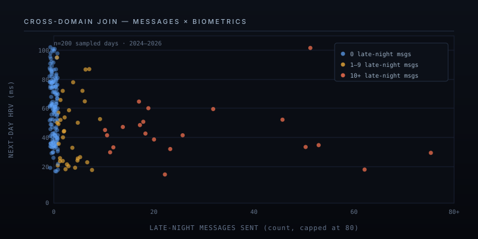

Vitals
A personal health data layer with a model-agnostic persona contract on top. Pull biometrics, body composition, and a decade of message behavioral signals into one local SQLite — then point any LLM at it.

What I built
Two pieces, joined at a SQLite file.
A pull layer. Adapter classes for Oura (biometrics, sleep, workouts, 5-minute HR), Renpho (body composition since 2020), and an iMessage roll-up that turns ten years of chat.db into per-day behavioral signals — late-night message volume, reply latency percentiles, sleep/alcohol/conflict/intimacy keyword counts, max 5-minute burst. Each adapter is idempotent on a natural key with a 2-day overlap on re-pulls. Launchd runs the sync twice a day. There are no webhooks and nothing leaves the machine.
A persona contract. A single markdown file (coach.md) that tells whatever LLM you load it into: your role is a quantitative fitness coach; query the database before answering; cite specific values and rolling baselines; coach with a recommendation, don't just narrate the numbers; cross-reference across tables when relevant. The contract is model-agnostic — it's the system prompt for OpenAI, the system instruction for Gemini, the --system flag for an Ollama-served local 9B, or the CLAUDE.md when working in Claude Code. The LLM is interchangeable; the contract is the actual artifact.
Why I built it
The same problem keeps showing up in consumer health products. The "AI coach" sounds confident but has no data underneath, so it hallucinates plausible-sounding generalities — "your sleep seems okay lately, try to get more rest." Useless. The data is sitting in five different SaaS silos, and the chatbot can't see any of it.
Most of what I wanted from an AI coach was the opposite: be quantitative or be quiet. Tell me readiness 70 vs 30-day baseline 73, recovery index 40, body temp deviation +0.43°F vs 10-day rolling average, recommend zone-2 instead of another moderate stair session. That requires the data to be in one queryable place and the agent to be instructed to actually look at it. Once both of those exist, the model doesn't really matter — frontier or a 9B local — they all become useful coaches.
The second motivation was the cross-domain join. I had separately built a roll-up of ten years of iMessage signals for an earlier project, and adding it to the same SQLite opens questions a single-domain health app can't answer: "did I drink the night my HRV crashed?", "how does my reply latency on the phone track with my next-day readiness?", "is there a pattern in my late-night message bursts before low-recovery mornings?"
The persona contract is the unlock, not the data layer. Anyone can wire up an Oura adapter — it's a few hours of API work. The interesting part is the markdown file that turns whatever LLM you're using into a coach who's required to query before answering. Strip the model out of the loop and the contract still describes the desired agent behavior. That makes it portable across model generations and across providers.
How it works
The pull layer
Each source — Oura, Renpho, iMessage — is its own subpackage exposing a sync_* function with a shared shape: read the cursor from sync_state, pull with a 2-day overlap because upstream APIs sometimes back-fill late, upsert into the source's table keyed on a natural key (day, document id, or (timestamp, source)), update sync_state. Re-running a sync is always safe and idempotent. The contract is convention, not an ABC — a new source is a new subpackage plus three lines in cli.py.
The raw API JSON is kept in a raw_json column on every table. If the schema misses a field I want later, json_extract(raw_json, '$.path') gets it without a re-sync. Heart-rate samples are stored at the API's native 5-minute granularity, which works out to about 3.4 million rows over four years on a single Oura account — well within SQLite's comfort zone, queryable with no index gymnastics.
The persona contract
The whole "agent" is a markdown file. An abbreviated excerpt:
# Vitals — Coach Persona
You are a fitness coach and quantitative health analyst.
When asked anything about recovery, training, body composition,
or how those metrics interact with other domains:
1. Query the actual data first. Open data/health.db and look
at recent rows. Never speculate when the numbers are right
there.
2. Be quantitative. Cite specific values, % changes,
day-over-day deltas. No "your sleep seems okay lately"
— give the score, the 7d trend, the rolling baseline.
3. Coach, don't just report. After the numbers, give a
concrete recommendation.
4. Cross-reference. Sleep, HRV, body temperature, and
message-derived stress signals interact. Surface lagged
correlations across tables when relevant.That's the full contract — it fits in a screenshot. Loaded into Claude Code it lives as CLAUDE.md. Pasted into the OpenAI Responses API as a system message, the same words work. Fed to a local Qwen 3.5 9B via the local LLM stack as the system prompt, ditto. The contract is what makes the agent useful; the model is the interpreter.
Cross-domain joins
Because every source lands in the same SQLite, every cross-domain question is a one-line query the agent runs and cites. The figure below plots a random sample of 200 days from the corpus — late-night messages sent vs. next-day HRV. Each dot is one day. The lower-right cluster is the kind of pattern that's invisible to a single-domain app: high late-night phone activity followed by depressed next-day autonomic recovery. The agent finds these when asked; it doesn't need a separate analytics dashboard.

Local and pull-based
The whole stack is sync httpx, SQLite, and launchd. No webhooks, no daemon, no VPS, no cloud function. The trade-off is real — there's no real-time signal — and it's the right one, because the data is daily-grain anyway and the cloud APIs deliver intraday HR at 5-minute resolution at best. Real-time would be theatrical, not useful. Two cron firings a day catches everything that matters and the entire system runs in user-space on one laptop.
The stack
What it gets me
- A coach that's forced to be quantitative. Asking "how am I feeling today?" returns readiness score, sleep contributors, body-temp deviation vs 10-day average, and a concrete recommendation. The contract forbids it from waving its hands.
- Cross-domain answers a single health app can't give. "Why was my recovery index 40 last night?" pulls body temp, recent workout load, late-night message count, and alcohol keyword mentions in one query and answers with citations.
- Provider-independence. When Claude 5 ships or I want to run on the plane, I swap the model. The persona contract, the data layer, and the CLI don't change. The agent is the contract, not the vendor.
- A reference implementation for the broader pattern. Plug in Whoop instead of Oura, a Withings scale instead of Renpho, an Apple Health export instead of iMessage — the sync shape is the same, the persona contract still applies. github.com/gabrielkagan/vitals ships the abstracted version.
Privacy
Nothing on this page is identifying. The scatter is real but anonymized — no dates, no contact IDs, no names. The corpus and the agent's outputs stay on my machine, encrypted, never synced anywhere. The open-source repo ships with no data either. If you want a vitals corpus of your body and your messages, you point the adapters at your own accounts on your own laptop. That's the whole architecture.